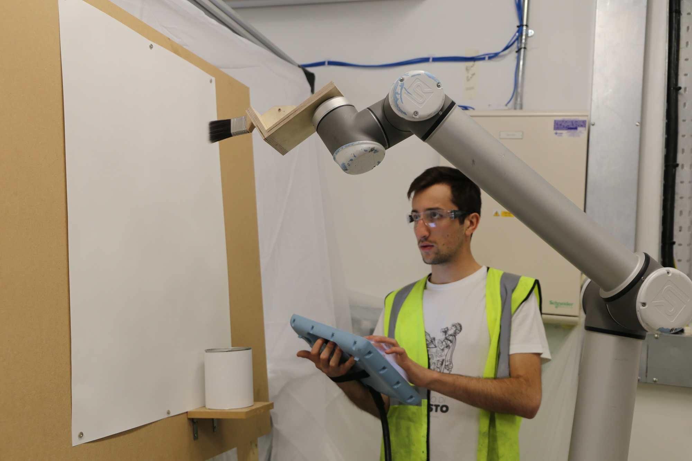

Summary of the week
During this week I redesigned prototypes 1 and 2 according to the user feedback I collected. After that I went on and finally played with the robotic arm UR10.
Prototype 1 Redesign
According to the user's feedback, I removed the joysticks in the middle of the interface. Also, I removed one of the hands. Now you can keep an hand in there, that is the "enabling device" and the other hand can interact with the other interfaces.

Prototype 2 Redesign
According to the user's feedback, I made a linear sequence, not a grid. There are now four blocks that can be added or removed and each one block has the height mapped to its frequency.

UR10 Setup
I prepared the room, I built a canvas and thought of the video-shooting setup. I started to do some tests in teaching mode, using the pendant.
Conclusions
Good progress, next week video-making and working towards the prep crit of Friday afternoon.